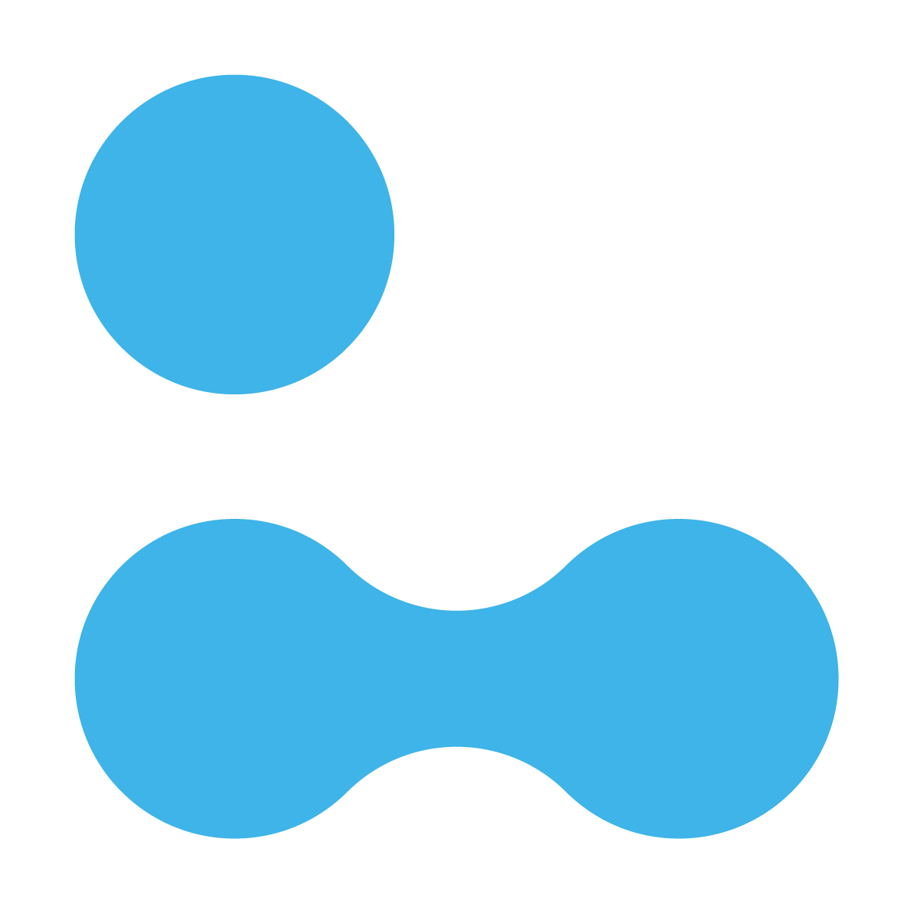
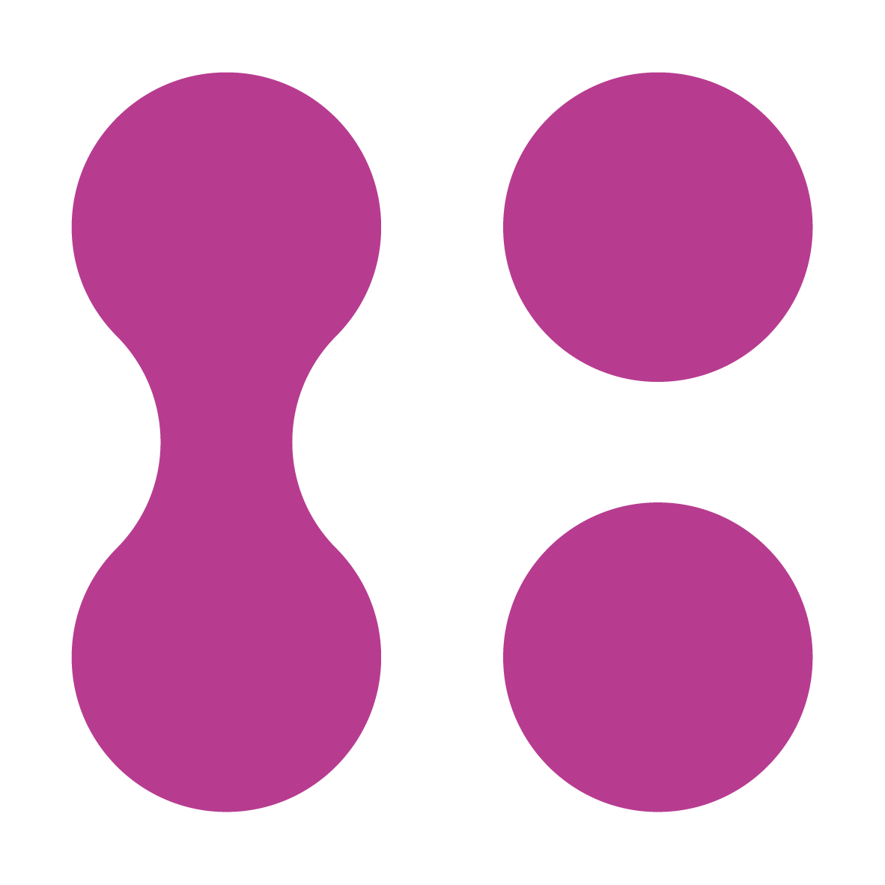
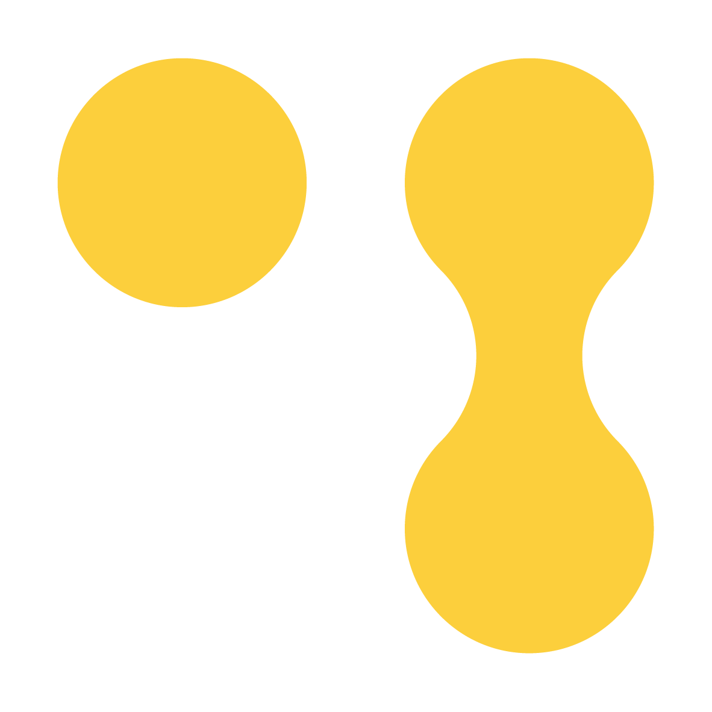
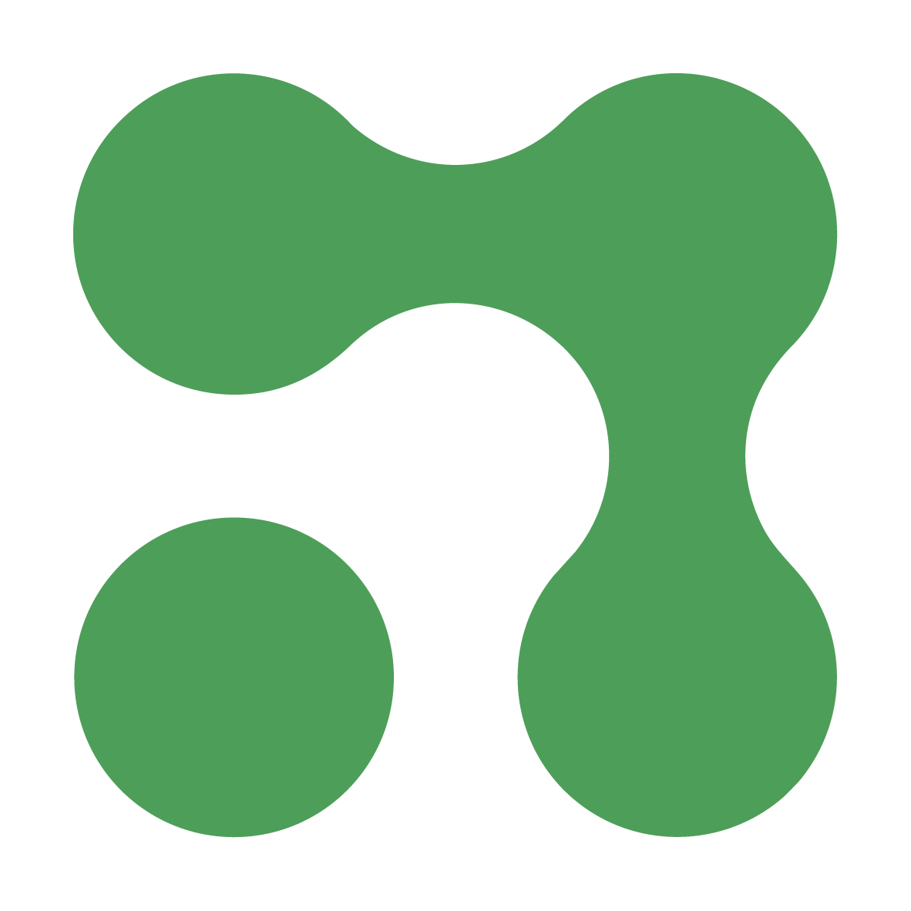
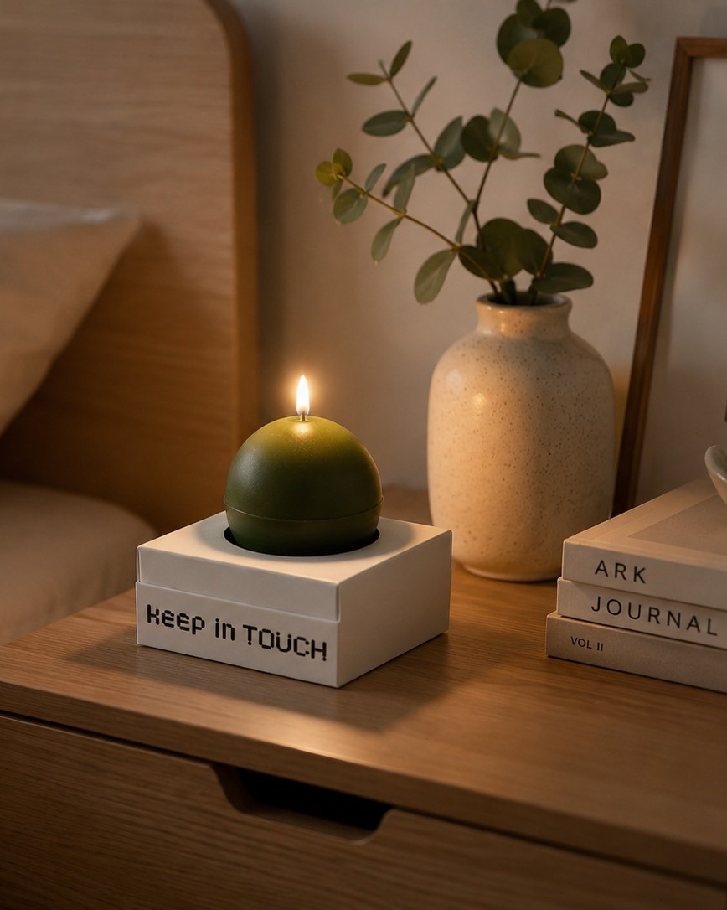
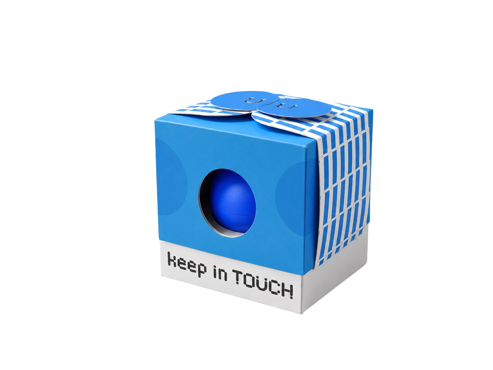
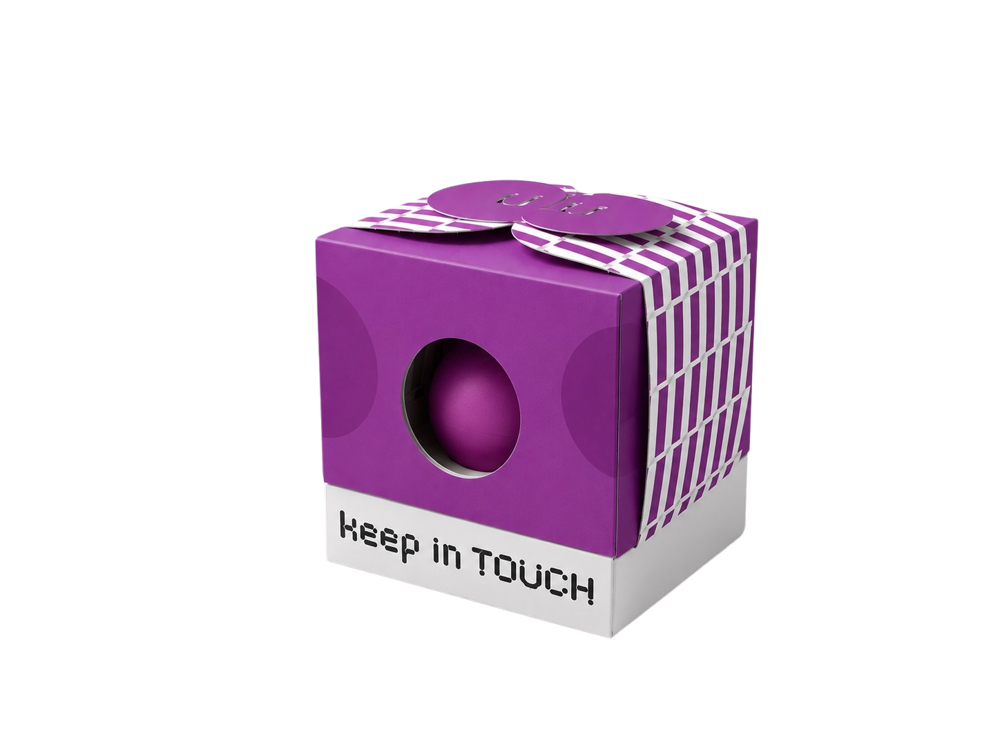
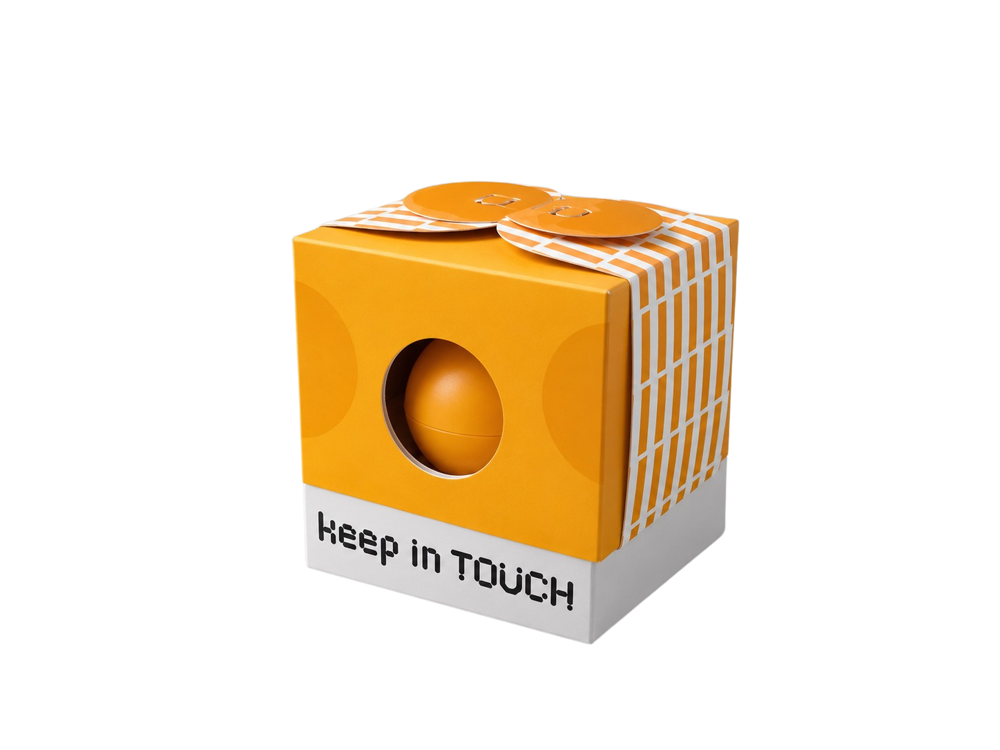
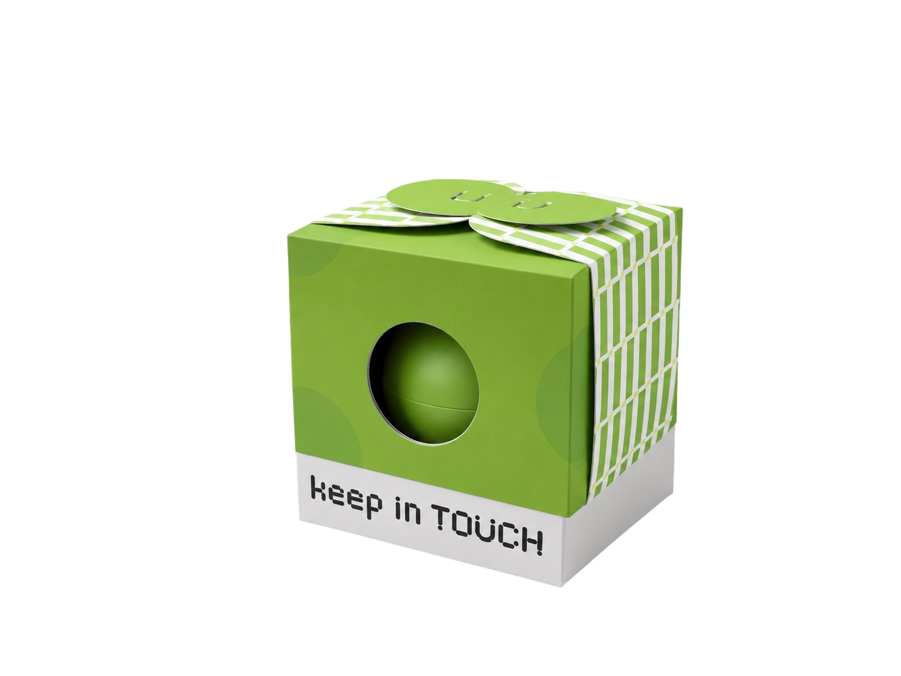
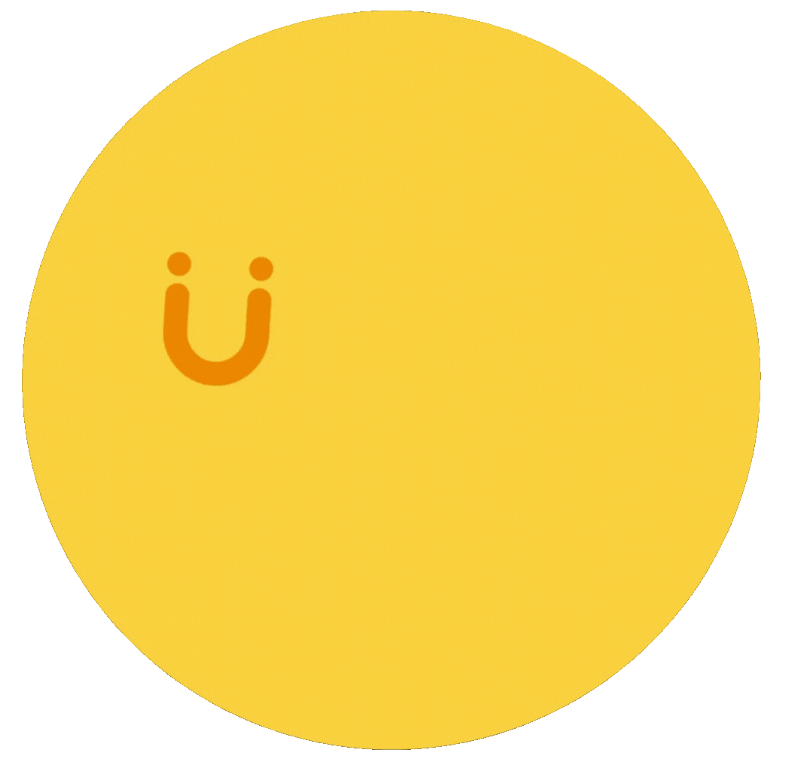

01
與自己的聯繫
理解自己的感受與界線，讓獨處不再只是孤立，而是重新回到自己的節奏。
Keep in Touch 有「保持聯繫」的意思。
在這裡，它同時包含與自己的聯繫、與他人的聯繫，以及與社會理解之間的聯繫。
理解自己的感受與界線，讓獨處不再只是孤立，而是重新回到自己的節奏。
擁有較穩定的內在狀態後，面對他人時，也更能感受到安全與真實。
當身邊的人願意給予空間，不急著催促、不急著定義，交流就能更友善柔軟。
這份企劃以四種人格特徵切入，
從壓力來源轉向溫柔的理解與正向詮釋。

對社交缺乏自信、
擔心被討厭也可以是溫柔謙和

對刺激容易
過度解讀與反應也可以是敏銳直覺

對自己要求高，
容易自我指責也可以是專注堅持

社交能量有限，
易受刺激影響也可以是獨立與豐富內在

「點燃蠟燭」是一個安靜卻具象的行動。
不需要大聲宣告，也不需要強烈表態，卻能讓人停下來注意到某件事。
從「微光、預感、留白、小宇宙」出發，
讓每一種狀態都能被看見、被理解、被安放。

點亮那些不容易被看見的自己，即使光很小，也依然值得被溫柔靠近。

點亮對細微變化的感受力，讓微小的訊息，也能被溫柔接住。

在努力做到更好的路上，也為自己留一點呼吸的空間。

點亮安靜裡豐富的世界，展開心中遼闊的想像。
當社恐者能在獨處時感到平靜，就更有力量面對下一次社交
當他們在社交中感受到理解與包容，也會更相信自己並不是異類。
